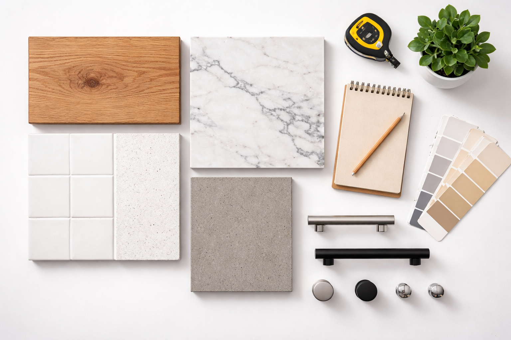
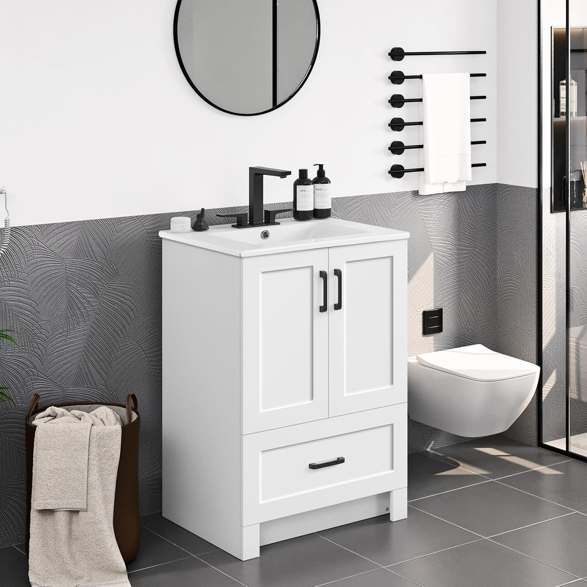
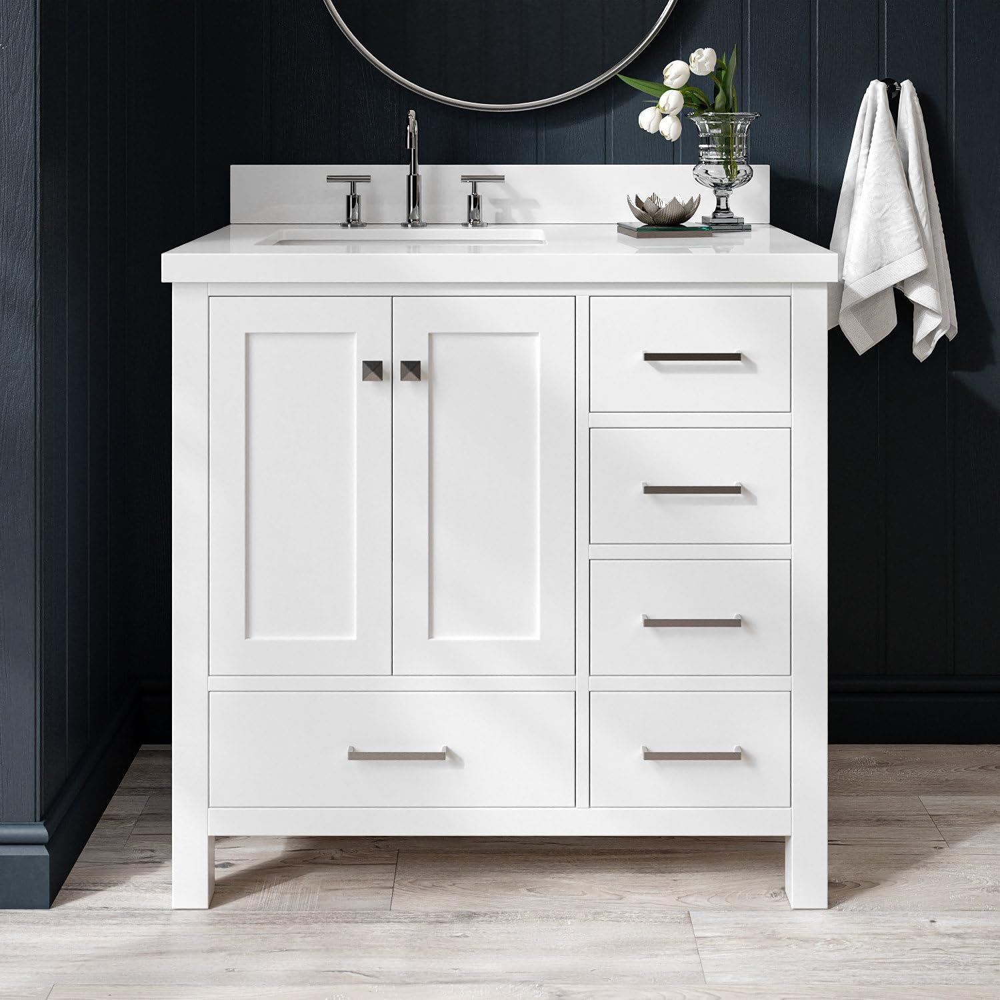
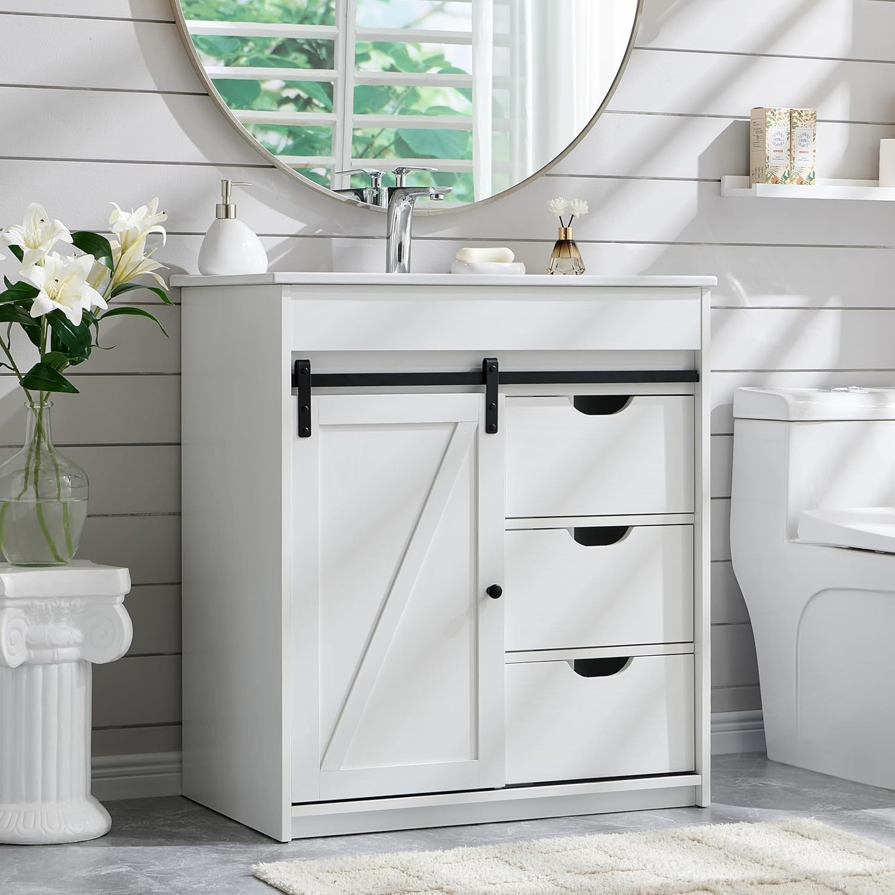

How to Choose the Right Bathroom Vanity: Complete Guide

Home & Bathroom Expert | 5+ years reviewing bathroom products
This article contains affiliate links. If you purchase through these links, we may earn a small commission at no extra cost to you. Full disclosure.
Quick Answer: Choosing a Bathroom Vanity
Start by measuring your space (leave 2" clearance per side). Choose freestanding for easy install or floating for modern style. Budget $150-$300 for basic, $300-$700 for mid-range, $700+ for premium. Quartz countertops last longest, ceramic sinks are easiest to maintain.

Choosing a bathroom vanity can feel overwhelming with thousands of options in every size, style, material, and price range. The wrong choice means living with daily frustration, while the right vanity transforms your bathroom experience and adds lasting value to your home.
This comprehensive guide walks you through every step of the decision process, from measuring your space to selecting the perfect combination of style, material, and storage. Whether you are a first-time homeowner or a seasoned renovator, this framework ensures you make a choice you will love for years.
Need specific product recommendations? See our best bathroom vanities of 2026, small bathroom vanity picks, or top floating vanities. Debating single vs double? Our comparison guide breaks it down.
Bathroom vanities range from $100 to $2,500+, and the best choice depends on your specific bathroom, lifestyle, and budget. This guide helps you find the sweet spot.
Why Getting Your Vanity Choice Right Matters
A bathroom vanity is not something you replace frequently. Most vanities last 10-20 years, meaning you will live with your choice through thousands of mornings. The daily impact of a well-chosen vanity is subtle but significant: smooth routines, organized storage, and a bathroom that feels like a retreat rather than a chore.
The Cost of Getting It Wrong
Replacing a bathroom vanity is expensive and disruptive. Beyond the vanity cost itself, you face potential plumbing modifications ($200-$1,200), countertop replacement ($100-$800), new faucet ($50-$300), and 1-3 days of bathroom downtime. Making the right choice upfront saves thousands in long-term costs.
According to HomeAdvisor's cost data, the average bathroom vanity installation costs between $800 and $3,500 when including labor and materials. Smart selection reduces this significantly.
What Makes a Great Bathroom Vanity
- Right Size: Fits your space with proper clearances and does not overwhelm or underwhelm the room.
- Adequate Storage: Holds everything you need without clutter. Drawers, shelves, and organizers keep essentials accessible.
- Quality Construction: Withstands daily moisture, temperature changes, and physical use without deteriorating.
- Timeless Style: Looks good today and will not feel dated in 5 or 10 years. Classic colors and clean lines age best.
- Proper Height: Comfortable for daily use without causing back strain or awkward bending.
The 8-Step Vanity Selection Process
Follow these steps in order for the most efficient path to your perfect vanity.
1 Measure Your Space
This is the most critical step. Get it wrong, and nothing else matters.
- Wall Width: Measure at floor level AND at 36 inches high. Record the smaller number.
- Depth Available: Measure from the wall to any obstruction. Standard vanity depth is 18-22 inches.
- Height Clearance: Measure from floor to any obstacles above (window sills, outlets, medicine cabinets).
- Plumbing Location: Mark the exact position of water supply lines and drain center from the left wall.
- Door/Toilet Clearance: Open the bathroom door fully and measure the clearance. Note toilet position and minimum passage width.
Golden Rule: Leave at least 2 inches of clearance on each side of the vanity. This allows for wall imperfections and ensures drawers and doors open freely.
2 Choose Your Style
Your vanity style should complement your bathroom's overall design direction.
- Freestanding: The most common and versatile. Easy to install, maximum storage. Works in traditional, transitional, and farmhouse styles. See our top picks.
- Floating (Wall-Mounted): Creates modern, airy aesthetic. Makes rooms feel larger. Requires wall-stud mounting. See our floating vanity guide.
- Corner: Fits into corners for maximum floor space savings. Limited options but perfect for odd-shaped small bathrooms.
- Furniture-Style: Looks like a piece of furniture with legs. Popular in transitional and traditional bathrooms.
3 Select Your Size
Match vanity width to your bathroom type and available space:
| Bathroom Type | Recommended Width | Sink Config |
|---|---|---|
| Powder Room / Half Bath | 18-24 inches | Single |
| Small Full Bathroom | 24-30 inches | Single |
| Standard Guest Bath | 30-36 inches | Single |
| Family Bathroom | 36-48 inches | Single or Double |
| Master Bathroom | 48-72 inches | Single or Double |
For detailed small bathroom guidance, see our small vanity picks.
4 Pick Your Materials
Cabinet and countertop materials determine durability, maintenance, and price.
Cabinet Materials (in order of durability)
- Solid Wood (Best): Poplar, birch, or oak with moisture-resistant finish. Lasts 20+ years. Premium price ($700+).
- Plywood (Great): Multi-layer construction resists moisture better than MDF. Good mid-range option ($400-$800).
- MDF (Good): Dense fiberboard with moisture-resistant coating. Excellent for budgets under $500. Lasts 10-15 years with proper care.
- Particle Board (Avoid): Swells and disintegrates when exposed to moisture. Never appropriate for bathrooms.
Countertop Materials
- Quartz: Most durable, non-porous, stain-resistant. Zero maintenance. Our top recommendation.
- Ceramic/Porcelain (Integrated): Seamless sink-countertop design. Easy to clean, no gaps for mold. Best budget option.
- Natural Marble: Beautiful but requires regular sealing. Prone to etching from acidic products. Best for low-traffic bathrooms.
- Granite: Very durable but heavy. Requires periodic sealing. More affordable than quartz in some regions.
5 Decide Sink Configuration
Single or double sink? This depends on your bathroom use patterns and space. For a detailed analysis, read our single vs double sink comparison.
- Single Sink: Best for bathrooms under 60" wide, solo users, guest baths, and when you prioritize counter space.
- Double Sink: Best for master baths 60"+ wide shared by couples, families with shared bathrooms.
6 Evaluate Storage Needs
Before shopping, take inventory of everything you store in or near your current vanity.
- Daily Items: Toothbrush, toothpaste, face wash, moisturizer, makeup, razor, deodorant.
- Weekly Items: Hair dryer, styling products, contact lens supplies, medication.
- Bulk Storage: Extra toilet paper, cleaning supplies, towels, refill products.
Storage Tip: Drawers are more efficient than cabinet doors for daily-use items. A vanity with 2-3 drawers and 1-2 doors usually offers the best organization balance.
7 Set Your Budget
Realistic budget ranges for complete vanity setups (vanity + countertop + sink):
- Budget ($100-$300): MDF construction, ceramic integrated sink. Perfect for guest baths and rental properties. Our pick: Yaheetech 24.5" at $149.99

 .
. - Mid-Range ($300-$700): Better MDF or plywood, nicer hardware, more storage options. Our pick: AmbroVania 24" Floating at $483.99

 .
. - Premium ($700-$1,500+): Solid wood, quartz countertop, dovetail drawers, furniture-grade construction. Our pick: ARIEL Cambridge 36" at $1,115

 .
.
Do not forget to budget for: Faucet ($50-$300), mirror ($30-$200), installation labor ($200-$500 if not DIY).
8 Install or Hire a Pro
Your installation approach depends on the vanity type and your skill level.
- DIY-Friendly: Freestanding vanities with existing plumbing alignment. Most homeowners can complete in 2-4 hours.
- Semi-DIY: Floating vanities with matching plumbing. Cabinet mounting is DIY if you are comfortable with wall anchoring; connect plumbing yourself or hire a plumber.
- Professional Recommended: Any vanity requiring plumbing relocation, wall reinforcement, or electrical work.
Recommended Vanities by Category
Based on our extensive testing, here are our top picks across key categories. For full reviews, see our complete roundup.
| Category | Our Pick | Price | Rating |
|---|---|---|---|
| Best Overall Value | Yaheetech 24.5" | $149.99 | 4.4/5.0 |
| Best Premium | ARIEL Cambridge 36" | $1,115 | 4.8/5.0 |
| Best Floating | AmbroVania 24" | $483.99 | 4.7/5.0 |
| Best Small Bathroom | Malwee 18" Floating


| $228.00 | 4.8/5.0 |
| Best Farmhouse | Aitjunz 30"
 
| $249.99 | 4.7/5.0 |
| Best Double Sink | LUXOAK 60"


| $499.99 | 4.3/5.0 |
Material & Style Quick-Reference
| Material | Durability | Moisture Resistance | Price Range | Best For |
|---|---|---|---|---|
| Solid Wood | Excellent | Good (with finish) | $700+ | Master baths, long-term |
| Plywood | Very Good | Very Good | $400-$800 | All bathrooms |
| MDF | Good | Good (sealed) | $100-$500 | Guest baths, budget |
| Particle Board | Poor | Very Poor | Under $100 | AVOID in bathrooms |
Budget Planning Guide
A realistic bathroom vanity budget accounts for more than just the cabinet itself.
Complete Cost Breakdown
- Vanity Cabinet + Sink + Countertop: $150-$2,500 (many vanities include all three)
- Faucet: $50-$300 (usually not included with the vanity)
- Mirror: $30-$200 (consider medicine cabinets for small bathrooms)
- Mounting Hardware (floating): Usually included; reinforcement lumber $20-$50 if needed
- Plumbing Supplies: $20-$50 for supply hoses, drain kit, and plumber's putty
- Professional Installation: $200-$500 (optional for freestanding; recommended for floating)
Where to Splurge vs. Save
- Splurge on: Hardware quality (soft-close hinges and drawer slides), countertop material, and faucet quality. These impact daily use the most.
- Save on: Cabinet color and finish (paint or stain can update later), decorative accessories, and mirror (can upgrade separately).
Installation Tips & Common Mistakes
Avoid these common pitfalls for a smooth installation.
Pre-Installation Checklist
- Verify all vanity dimensions match your measurements (check the actual product, not just the listing).
- Confirm your faucet hole configuration matches the vanity (single hole, 3-hole, or 8-inch spread).
- Have all supplies ready: supply hoses, drain assembly, plumber's putty, silicone caulk, level, adjustable wrench.
Top Installation Mistakes to Avoid
- Not checking that the vanity is level (use shims on uneven floors).
- Forgetting to apply silicone where the vanity meets the wall (prevents water damage).
- Over-tightening supply line connections (can crack fittings).
- Not testing for leaks before pushing the vanity against the wall.
Post-Installation Quality Check
- Run water for 5 minutes and check all connections for leaks.
- Test all drawers and doors for smooth operation.
- Verify the vanity is secure and does not wobble (freestanding) or sag (floating).
- Apply a bead of silicone caulk where the countertop meets the wall to prevent water intrusion.
Frequently Asked Questions
Q: What size bathroom vanity do I need?
For small bathrooms (under 50 sq ft): 18-24 inch vanity. Standard bathrooms: 30-36 inch. Master bathrooms: 48-72 inch. Always measure available wall space and leave 2 inches of clearance on each side. See our small vanity guide for compact options.
Q: What is the best material for a bathroom vanity?
Solid wood is the most durable but most expensive. Quality MDF with moisture-resistant coating is excellent for budgets under $500. Avoid particle board entirely, as it deteriorates rapidly in bathroom humidity.
Q: How much does a good bathroom vanity cost?
Budget vanities cost $100-$300, mid-range $300-$700, and premium $700-$1,500+. Add $50-$300 for a faucet and $200-$500 for professional installation if needed. See our top picks at every price point.
Q: Should I get a vanity with or without a countertop?
For most buyers, a vanity with an included countertop and sink is more convenient and cost-effective. Buying separately allows more customization but adds complexity and typically costs more overall.
Q: How tall should a bathroom vanity be?
Standard height is 30-32 inches. Comfort height is 34-36 inches, which reduces back strain for taller adults. ADA-compliant height is 34 inches maximum. Floating vanities can be mounted at any height you prefer.
Your Bathroom Vanity Selection Checklist
Use this checklist to make sure you have covered everything before purchasing:
- Space measured (wall width, depth, height, plumbing location, door clearance)
- Style chosen (freestanding, floating, corner, or furniture-style)
- Size selected (with 2" clearance on each side minimum)
- Material decided (solid wood, MDF, or plywood for cabinet; quartz, ceramic, or marble for counter)
- Sink configuration set (single vs double based on space and users)
- Storage needs assessed (drawers vs doors, internal organizers)
- Budget finalized (including faucet, mirror, and installation)
- Installation planned (DIY or professional, tools and supplies ready)
With these 8 steps complete, you are ready to order with confidence. A well-chosen bathroom vanity is one of the most satisfying home improvements you can make. It is the piece you see and use first thing every morning and the last thing every night. Make it count.
Complete Your Bathroom Upgrade
Our network of expert review sites covers every bathroom essential: